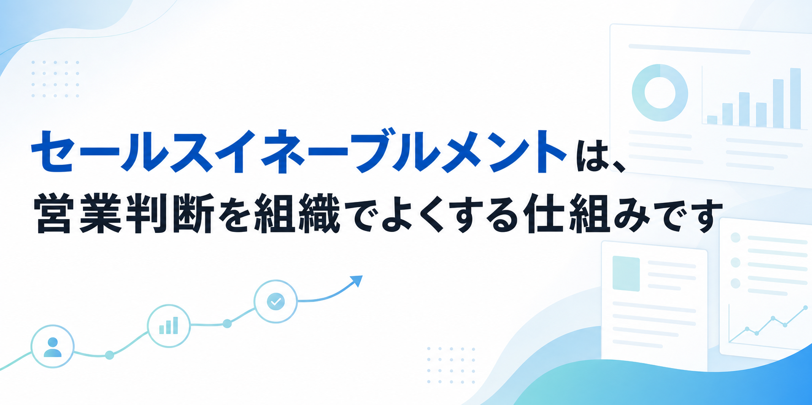
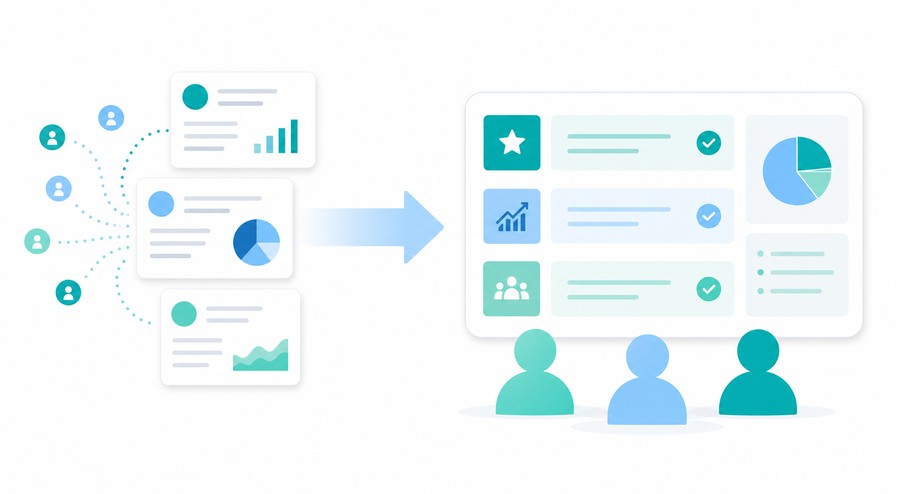
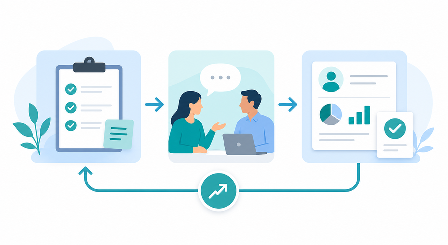

セールスイネーブルメントは、営業判断を組織でよくする仕組みです

みなさんこんにちは、Valorize AIの斎藤です。
最近、営業組織づくりや営業DXの文脈で「セールスイネーブルメント」という言葉を目にする機会がかなり増えました。
ただ、実際に調べてみると、少し分かりにくい言葉でもあります。
営業研修のことなのか。
営業資料を管理することなのか。
SFAやCRMを入れることなのか。
トップ営業のノウハウを共有することなのか。
どれも間違いではありません。けれど、それだけで捉えると、セールスイネーブルメントの本質から少しずれてしまう気がしています。
たとえば、営業資料は以前より増えた。研修も実施している。SFAやCRMにも入力している。ナレッジ共有の場もある。
それでも、商談準備の質が人によって違う。提案の切り口が担当者ごとにばらつく。商談後に残る情報が少なく、次の提案やマネジメントに使いづらい。失注理由も、結局は担当者の感覚に閉じてしまう。
こういう状態は、多くの営業組織で起きているのではないでしょうか。
このとき問題なのは、単に資料が足りないことでも、研修が足りないことでもありません。営業が商談前に何を見て、商談中に何を判断し、商談後に何を残し、次の行動にどう返すか。その流れが組織の中でつながっていないことです。
私は、セールスイネーブルメントを考えるうえで大事なのはここだと思っています。
セールスイネーブルメントは、営業が商談前後でよい判断をし続けるための材料と改善の流れを、組織に作ることです。
今回は、SEOキーワードとしても検索されている「セールスイネーブルメント」について、一般的な定義や背景、効果、取り組み、ツールの考え方に触れながら、BtoB企業が自社でどう捉えるとよいのかを整理していきます。
営業資料も研修もあるのに、なぜ営業判断はそろわないのか
営業組織を強くしようとすると、最初に取り組みやすいのは「資料」「研修」「ツール」です。
提案資料を整える。
サービス資料を最新版にする。
トークスクリプトを作る。
営業研修を実施する。
SFAやCRMに活動履歴を残す。
ナレッジ共有会を開く。
どれも大切です。むしろ、これらがない状態で営業組織を強くするのは難しいと思います。
ただ、これらを整えたからといって、すぐに営業判断がそろうわけではありません。
なぜなら、営業成果を左右するのは「情報があるか」だけではなく、「その情報が判断に使われているか」だからです。
たとえば、同じ会社に提案する場合でも、営業担当者によって準備の仕方が違うことがあります。
ある担当者は、過去の問い合わせ内容、業界特性、決裁者の関心、競合比較で聞かれそうな点まで見てから商談に入る。
別の担当者は、会社概要と直近のやり取りだけを見て商談に入る。
どちらも資料にはアクセスできます。SFAにも情報は入っているかもしれません。しかし、商談前にどの情報を見て、何を仮説として持ち、どこを確認するかがそろっていなければ、提案の質はばらつきます。
商談後も同じです。
議事録が残っている。活動履歴も残っている。けれど、顧客が本当に気にしていたこと、提案を進めるうえでの障害、次回までに確認すべきこと、失注した場合の学びが、次の営業判断に使える形で残っていない。
こうなると、情報はあるのに、組織の改善にはつながりません。
営業会議では「この案件はどうなっていますか」と確認する。担当者は「検討中です」「予算確認中です」と答える。けれど、なぜ止まっているのか、どの判断材料が足りないのか、次に誰へ何を確認すべきかまでは見えにくい。
この状態では、営業資料を増やしても、研修を増やしても、ツールを増やしても、現場の判断はなかなかそろいません。
営業組織に足りないのは、資料や研修の量だけではありません。商談前後の判断に使える材料が組織に残り、次の行動へ戻る流れです。
セールスイネーブルメントとは、営業組織が成果を出し続けるための仕組みづくり
では、セールスイネーブルメントとは何でしょうか。
一般的には、営業組織が継続的に成果を出すために、営業活動を支えるコンテンツ、プロセス、トレーニング、データ、ツールなどを整える取り組みとして説明されます。
もう少し噛み砕くと、営業担当者が成果を出しやすい状態を、個人任せではなく組織として作ることです。
ここには、いくつかの要素が含まれます。
- 営業資料や提案書などのコンテンツを整えること
- 顧客情報や商談情報を使いやすくすること
- 営業プロセスや商談の進め方を整理すること
- トレーニングやフィードバックの機会を作ること
- SFA、CRM、営業支援ツールなどを活用すること
- 施策が成果につながっているかを振り返ること
このように見ると、セールスイネーブルメントは一つの施策名ではありません。
「営業研修をやること」だけでもありません。
「営業資料を一元管理すること」だけでもありません。
「SFAやCRMを導入すること」だけでもありません。
それらを、営業成果につながる形で結び直す考え方です。
ここで重要なのは、セールスイネーブルメントが「営業を管理するための仕組み」ではなく、「営業がよい判断をしやすくするための仕組み」だという点です。
もちろん、営業活動の可視化や効果測定は必要です。マネージャーが案件状況を把握できなければ、適切な支援もできません。
ただ、管理のためだけに情報を集めても、現場は疲れてしまいます。
入力項目が増える。資料の保管場所が増える。会議で確認されることが増える。それなのに、商談前の準備や次の一手が楽にならない。こうなると、セールスイネーブルメントのために始めた取り組みが、かえって現場の負荷になることもあります。
セールスイネーブルメントは、営業活動を支える要素を成果につながる形で結び直す考え方です。そして、その結び目にあるのが「営業判断に使える材料」です。
注目される背景は、営業の属人化よりも「判断の属人化」にある
セールスイネーブルメントが注目される背景として、よく挙げられるのが営業の属人化です。
一部の優秀な営業担当者に成果が偏る。
担当者によって提案品質が変わる。
新人や中途メンバーの立ち上がりに時間がかかる。
顧客情報や商談の進め方が個人の中に閉じている。
こうした課題は、多くの会社にあります。
ただ、ここで「できる営業のやり方を共有すればよい」とだけ考えると、少し足りません。
なぜなら、営業の属人化の正体は、スキル差だけではないからです。実務上は、「判断の属人化」として表れることが多いです。
同じ顧客情報を見ても、何を重要だと判断するかが違う。
同じ商談メモを読んでも、次に何を確認すべきかが違う。
同じ失注理由を聞いても、商品課題と見るのか、提案課題と見るのか、ターゲット課題と見るのかが違う。
この判断の前提が個人の頭の中に閉じていると、組織として学習しにくくなります。
トップ営業がなぜその順番で質問したのか。
なぜそのタイミングで導入事例を出したのか。
なぜ価格の話をその場では深掘りしなかったのか。
なぜその案件を今月の重点案件と見たのか。
こうした判断の背景が残らなければ、他のメンバーは表面的な行動だけを真似することになります。
「この資料を使った方がよい」
「このトークが刺さる」
「この業界にはこの事例を出す」
もちろん、こうした型も必要です。しかし、顧客の状況は毎回少しずつ違います。購買プロセスも複雑になり、商談に関わる人も増えています。
その中で必要なのは、固定のトークを覚えることだけではなく、目の前の顧客に対して何を優先して確認し、どの情報を材料にして次の提案を組み立てるかです。
SFAやCRMがあっても、この判断の前提まで残っていなければ、組織としての再現性は高まりません。
入力された活動履歴が「訪問」「提案」「検討中」だけでは、次の判断には使いづらいです。商談メモが長く残っていても、顧客の本音、意思決定の障害、次回までの確認事項、提案を変えるべき理由が見えなければ、マネージャーも支援しづらくなります。
つまり、セールスイネーブルメントで見直すべき属人化は、営業担当者のスキル差だけではありません。商談判断の前提が個人の頭の中に閉じている状態です。

効果は、営業力の底上げよりも「次の判断がよくなること」で見る
セールスイネーブルメントの効果としては、一般的にいくつかのものが挙げられます。
- 営業力の底上げ
- 提案品質の安定
- 営業活動の効率化
- 新人や中途メンバーの早期戦力化
- 営業プロセスの標準化
- 営業部門とマーケティング部門の連携強化
- データに基づく改善
- 成果への貢献度の可視化
どれも大事な効果です。
ただ、実務で考えるときは、もう少しシンプルに見た方が分かりやすいと思っています。
それは、「次の営業判断がよくなっているか」です。
営業資料を整えた結果、商談前の準備がよくなったか。
研修を実施した結果、顧客への質問がよくなったか。
SFAやCRMへの入力を見直した結果、マネージャーの支援が早くなったか。
商談後の振り返りを残した結果、次回提案の精度が上がったか。
失注理由を整理した結果、マーケティングや商品改善の判断材料になったか。
このように見ると、セールスイネーブルメントの効果は、単なる活動量では測れません。
資料が何本作られたか。
研修を何回実施したか。
SFAの入力率が何％か。
ナレッジ共有会を何回開いたか。
これらは大切な中間指標です。しかし、それだけでは「営業判断がよくなったか」は分かりません。
たとえば、提案資料がたくさん作られていても、現場がどの商談でどの資料を使うべきか判断できなければ、資料は増えただけになります。
研修を実施しても、商談後の振り返りで何ができていて何が足りなかったのかを確認しなければ、学びは現場に戻りにくくなります。
SFAやCRMの入力率が高くても、入力された情報が次のアクションや案件支援に使われていなければ、現場から見ると「入力のための入力」になってしまいます。
逆に、情報量がものすごく多くなくても、次の判断に使える形で残っていれば、営業組織は少しずつ強くなります。
商談前に見るべき情報が分かる。
商談中に確認すべき論点が分かる。
商談後に残すべき情報が分かる。
マネージャーが支援すべき案件を見つけやすくなる。
マーケティングが次に作るべきコンテンツを判断しやすくなる。
商品やサービスの改善に、顧客の声が戻りやすくなる。
こうした変化が積み重なると、営業力の底上げや提案品質の安定につながっていきます。
セールスイネーブルメントの成果は、資料が使われたか、研修を実施したかだけでなく、商談後に残った情報が次の判断を変えているかで見た方がよいです。

取り組みの中心は、商談前・商談中・商談後の材料をつなぐこと
では、自社でセールスイネーブルメントを考えるとき、何から見ればよいのでしょうか。
導入ステップを細かく並べることもできます。目的を決める。現状を把握する。営業プロセスを整理する。資料を整える。研修を行う。ツールを選ぶ。効果測定する。
もちろん、こうした順番は必要です。
ただ、この記事では手順よりも先に、営業活動の流れで見てみたいと思います。
見るべきなのは、商談前、商談中、商談後です。
商談前に、営業は何を見ているか
まず、商談前です。
営業担当者は、商談に入る前に何を見ているでしょうか。
会社概要。
問い合わせ内容。
過去の接点。
業界の特徴。
検討していそうな課題。
相手の役職や関心。
過去に似た顧客で起きた論点。
よく聞かれる質問。
競合と比較されやすいポイント。
こうした情報が整理されていると、営業は仮説を持って商談に入れます。
逆に、情報が散らばっていたり、どこを見ればよいか分からなかったりすると、商談準備は個人差に依存します。
セールスイネーブルメントの第一歩は、完璧な資料を作ることではありません。営業が商談前に見るべき判断材料を、迷わず確認できる状態にすることです。
商談中に、営業は何を判断しているか
次に、商談中です。
商談中の営業は、単に説明しているだけではありません。相手の反応を見ながら、常に判断しています。
この顧客は、課題をどこまで自覚しているのか。
決裁者は誰なのか。
導入時期は現実的なのか。
価格が主な障害なのか、社内合意が障害なのか。
機能説明を深めるべきか、導入後の運用を話すべきか。
次回は誰を巻き込むべきか。
こうした判断は、営業経験が出やすい部分です。
だからこそ、商談中に何を見て判断するのかを、組織として言語化しておく意味があります。
ここで大事なのは、営業をマニュアル通りに動かすことではありません。むしろ逆です。
顧客ごとに状況が違うからこそ、判断の観点をそろえる必要があります。
何を確認できれば前に進めてよいのか。
何が分からないままだと危ないのか。
どの反応があれば提案内容を変えるべきなのか。
どの条件がそろえばマネージャーが支援に入るべきなのか。
こうした観点があると、営業担当者は自分で考えやすくなります。マネージャーも、単に「頑張って」と言うのではなく、具体的な支援ができます。
商談後に、何を残して次へ返すか
最後に、商談後です。
セールスイネーブルメントで特に重要なのは、ここだと思います。
商談後に何を残すかで、次の営業判断の質が変わります。
顧客が本当に困っていたこと。
反応がよかった説明。
伝わらなかった説明。
競合比較で聞かれたこと。
社内稟議で不安になりそうな点。
次回までに確認すべきこと。
提案を変えるべき理由。
失注した場合に、次へ活かすべき学び。
これらが残っていれば、次回の商談準備に使えます。マネージャーの案件支援にも使えます。マーケティングがコンテンツを作る材料にもなります。商品やサービスの改善にもつながります。
逆に、商談後の情報が「議事録としては残っているが、次に使えない」状態だと、組織学習は進みにくくなります。
長いメモが残っているだけでは不十分です。大事なのは、次の判断に使える形になっていることです。
この点で、近年のAI営業支援や商談分析の領域が、商談前の準備、商談中の支援、商談後の要約や振り返りまで扱うようになっているのは自然な流れだと思います。
ただし、AIが主役ではありません。AIは、情報整理や振り返りの負荷を下げる手段になり得るだけです。
本当に考えるべきなのは、人がどの情報を確認し、どの判断に使い、どこまでを組織として残すのかです。
自社でセールスイネーブルメントを考えるなら、最初に見るべきは導入ステップの正しさではありません。商談前後の情報が、次の判断へ戻っているかです。
ツールは必要かではなく、何の判断を支えるのかから考える
「セールスイネーブルメント」と検索する人の中には、ツールを探している人も多いと思います。
営業資料を管理するツール。
ナレッジ共有ツール。
SFAやCRM。
商談解析ツール。
営業トレーニングツール。
AIによる商談支援。
こうしたツールは、有効な手段になり得ます。
営業資料が散らばっているなら、一元管理する仕組みは必要です。商談情報が担当者のメモに閉じているなら、共有できる場所も必要です。商談後の入力負荷が高すぎるなら、要約や自動反映の支援も検討価値があります。
ただ、ツールを入れる前に考えたいことがあります。
それは、「そのツールで、どの判断を支えたいのか」です。
資料を探す時間を減らしたいのか。
商談前の準備の質をそろえたいのか。
提案資料の使われ方を見たいのか。
商談後の情報をマネージャーが見やすくしたいのか。
失注理由をマーケティングや商品改善に返したいのか。
次アクションの抜け漏れを減らしたいのか。
ここが曖昧なままツールを入れると、資料置き場や入力先が増えるだけになりやすいです。
営業担当者からすると、「また新しい場所に入力するのか」「どこに何があるのか分からない」「結局、商談前に何を見ればよいのか分からない」となってしまいます。
ツールは、セールスイネーブルメントの入口ではありません。
入口は、自社の営業活動の中で、判断材料がどこで途切れているかを見つけることです。
商談前に必要な情報が見つからないのか。
商談中の判断観点がそろっていないのか。
商談後に次へ使える情報が残っていないのか。
マネージャーが支援すべき案件を見つけにくいのか。
マーケティングや商品側に顧客の声が戻っていないのか。
この断絶が見えてから、ツールを考える方がよいです。
AIについても同じです。
AIを使えば、商談メモの要約、確認事項の抽出、次アクションの整理、SFAやCRMへの反映支援などはしやすくなります。商談前の準備資料や想定質問の整理にも使える場面があります。
一方で、AIが出した内容をそのまま正解にするのは危険です。顧客情報の扱い、アクセス権、保存範囲、人が確認する運用、どの項目を正式な記録として残すかといった設計も必要です。
つまり、AIもツールも、営業判断の代わりをするものではありません。
営業判断に使う材料を、速く、漏れなく、使いやすくするための手段です。
ツールはセールスイネーブルメントの入口ではなく、営業判断に使う材料と改善の流れが見えた後に、それを速く、漏れなく、使いやすくするための手段です。
セールスイネーブルメントは、営業がよい判断をし続けるための組織設計
ここまで見てきたように、セールスイネーブルメントはかなり広い言葉です。
定義としては、営業組織が継続的に成果を出すための仕組みづくりです。
背景には、営業の属人化、顧客の購買行動の複雑化、営業プロセスの標準化ニーズ、SFAやCRMなどのセールステック普及があります。
効果としては、営業力の底上げ、提案品質の安定、営業活動の効率化、部門連携、効果測定などが語られます。
取り組みとしては、資料管理、ナレッジ共有、トレーニング、プロセス設計、データ活用、ツール導入などが含まれます。
ただ、これらをそのまま全部やろうとすると、かなり大きな話になります。
中小企業や成長途中のBtoB企業では、最初から専門部署を作ったり、大規模なツールを入れたりするのは現実的ではないかもしれません。
だからこそ、私はまず「判断材料の流れ」から見るのがよいと思っています。
営業が商談前に何を見るのか。
商談中に何を判断するのか。
商談後に何を残すのか。
その情報が次の商談、次の提案、次のマネジメント、次のマーケティング判断に返っているのか。
ここを見れば、自社にとってのセールスイネーブルメントの入口が見えてきます。
ある会社では、商談前の準備情報が散らばっていることが課題かもしれません。
別の会社では、商談後の記録が次アクションに使えないことが課題かもしれません。
また別の会社では、失注理由や顧客の反応がマーケティングや商品改善に戻っていないことが課題かもしれません。
この入口が違えば、必要な施策も変わります。
資料管理から始める会社もあります。
商談後の振り返り項目を見直す会社もあります。
営業会議の見方を変える会社もあります。
SFAやCRMの項目を整理する会社もあります。
AIで要約や情報整理の負荷を下げる会社もあります。
大切なのは、施策名から入らないことです。
「セールスイネーブルメントをやる」と決めてから、研修、資料、ツールを並べるのではなく、自社の営業活動のどこで判断材料が途切れているのかを見る。
そのうえで、営業がよい判断をし続けるために、どの材料を残し、誰が使い、どう改善に返すのかを決める。
この順番で考えると、セールスイネーブルメントは流行語ではなく、自社の営業組織を見直すための実務的な考え方になります。
セールスイネーブルメントを始めるとは、何か大きなツールを入れることではありません。自社の営業活動のどこで判断材料が途切れているかを見つけ、次の判断に返る流れを整えることから始まります。
もし、自社の営業活動でも同じような課題を感じている場合は、まず現状を整理するところからお手伝いできますので、お気軽にご連絡ください！
https://valorize-ai.com/